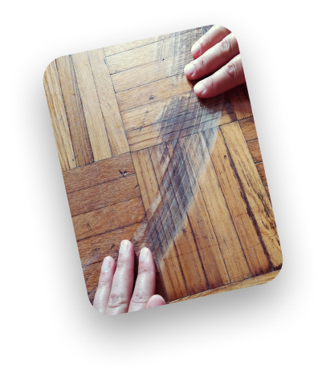
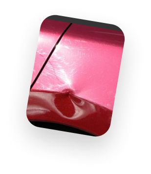
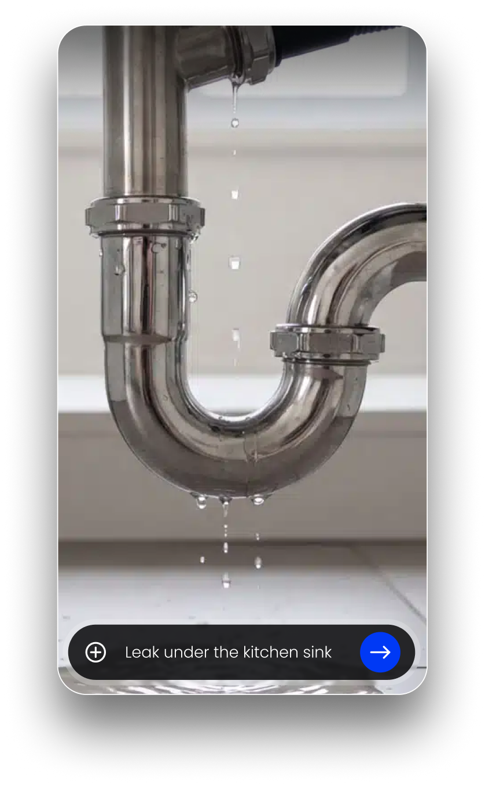
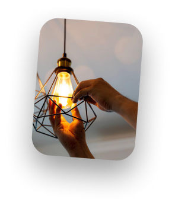
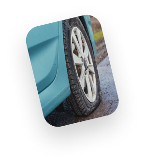
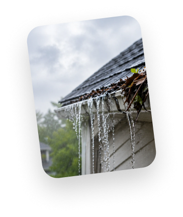

Get your 🏡 🚗 job done right
See real photos of local pros' actual work before you hire. Get a price range, then start a spam-free chat with the ones that fit.
Download from App Store Brightglow
For businesses
Brightglow
For businesses
See real photos of local pros' actual work before you hire. Get a price range, then start a spam-free chat with the ones that fit.
Download from App Store





Dent Flooring Flickering lights Roof leak Flat tire